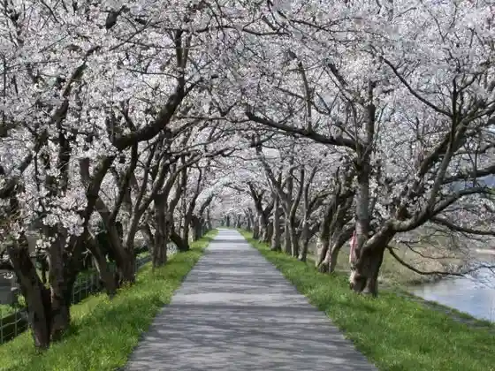
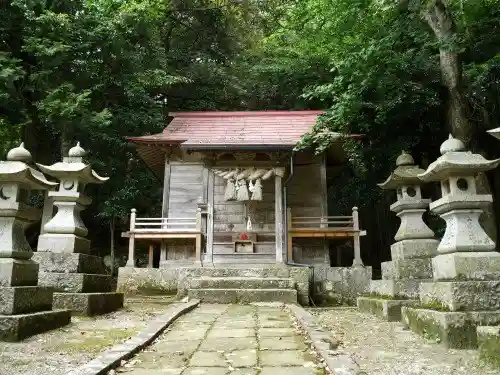

Tottori Hana Kairo
Nanbu, Tottori · 0859-48-3030 · Official / source link
Hossho Tera Shiroyama Park Hossho Terakawa
Nanbu, Tottori · 0859-30-4822 · Official / source link

Aka Inoshishi Iwa Shrine
Nanbu, Tottori · 0859-30-4822 · Official / source link

Tezukuri Soseji
Nanbu, Tottori · 0859-66-5111 · Official / source link
Yoshinari Deai no Kan
Nanbu, Tottori · 0859-66-4755 · Official / source link
Tottori Hana Kairo Jiyu Sansaku, Fiirudobingo
Nanbu, Tottori · 0859-48-3030 · Official / source link
Resutoran Hana Kairo
Nanbu, Tottori · 0859-48-3030 · Official / source link
Jimoto no Tsuruya Kusabana Wotsukatta Saiku Experience
Nanbu, Tottori · 0859-66-5111 · Official / source link
Nanbu Town Hall
Nanbu, Tottori · 0859-66-3112 · Official / source link